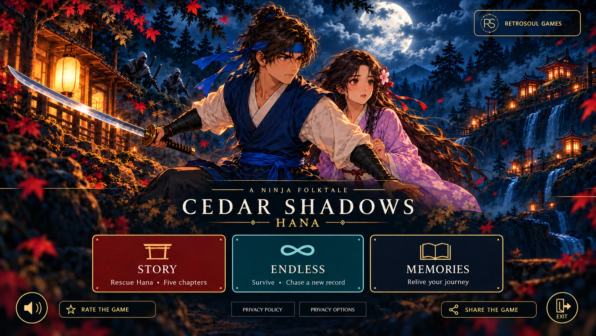
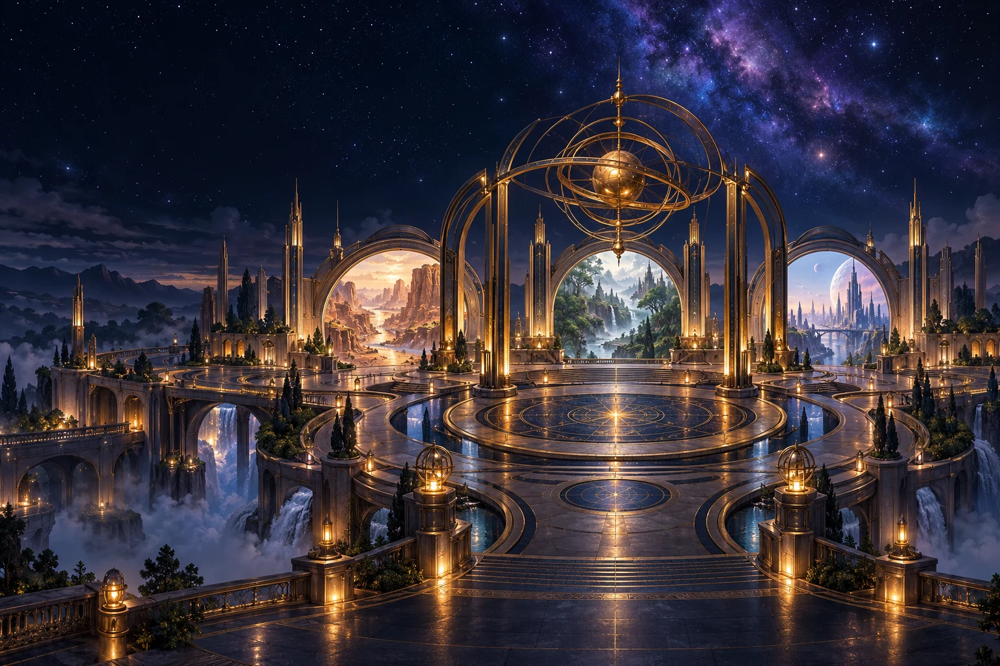

CEDAR SHADOWS
HANA
ANDROID · ACTION-ADVENTURE
A promise worth fighting for.
A ninja’s journey. A love threatened.
A world beneath the cedar shadows.
 RETROSOULG A M E S
RETROSOULG A M E S
AN INDEPENDENT GAME STUDIO
A familiar feeling. An unfamiliar place.
Welcome to the imagination of RetroSoul Games.
The gateway holds possibilities. Meet our first world: Hana ↗
THE WORLD IS ONLY THE BEGINNING
We create games to get lost in — through their atmosphere, their challenges and the people at the heart of them. Our first story begins beneath the cedars. Our imagination has no borders.
OUR FIRST WORLD

CEDAR SHADOWS
ANDROID · ACTION-ADVENTURE
A ninja’s journey. A love threatened.
A world beneath the cedar shadows.